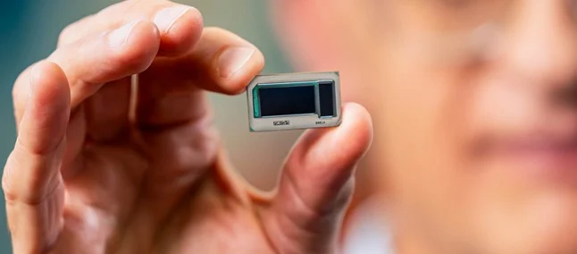

18 de setembro de 2023

A Intel anunciou, nesta segunda-feira (18), a criação de uma tecnologia inovadora para fabricar seus processadores e torná-los mais eficientes em termos de energia. Trata-se de um substrato de vidro que contorna as limitações dos atuais materiais com base orgânica, permitindo agrupar mais componentes lógicos em um espaço menor.
Com a crescente demanda por hardware de alto desempenho e a ameaça do fim da Lei de Moore, a otimização das técnicas de embalagem de processadores com a inclusão de substratos de vidro pode ser a chave para garantir que os chips da marca atendam às exigências de desempenho da inteligência artificial e outras tecnologias emergentes.
Este é uma notícia curta. Para mais informações, clique em "Leia Mais" abaixo: